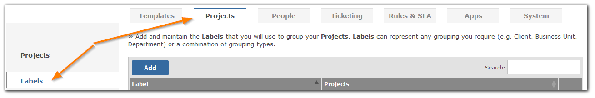
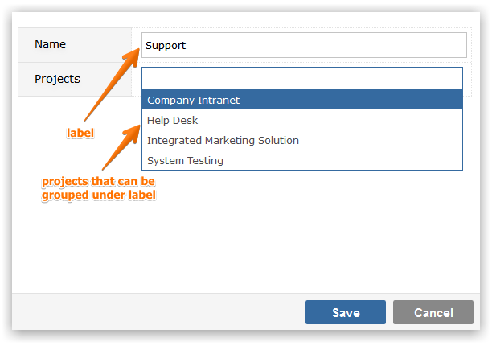

You can group projects any way you like; Department, Client, Team and Business Unit are some of the most common groupings. There is a system group called 'All Projects' that you can use to see data from all of your projects simultaneously if you wish to but this is not a grouping in the strict sense in that it is not a way for you, the administrator, to group your projects. The term for a project grouping is a 'Label'.

To Add a new Label, click on the Add button. You will be prompted to provide

Click Save to create the Label.
To maintain a Label value click in the appropriate field and use inline editing to easily and instantly change the field values. To change the project(s) associated with this Label click on the Edit icon and make your changes.
To delete a Label, click on the Delete icon to the right of the screen. You will be warned about the number of projects that will be unlabelled should you continue, and allowed to abort or proceed.
NoteThe is a system Label 'Other' under which unlabelled projects are placed (labelling is not mandatory).